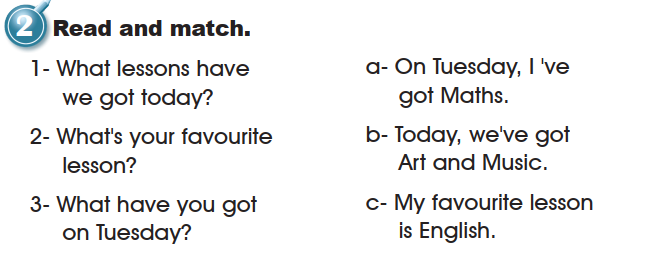
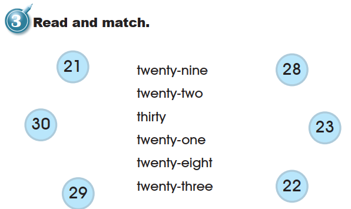
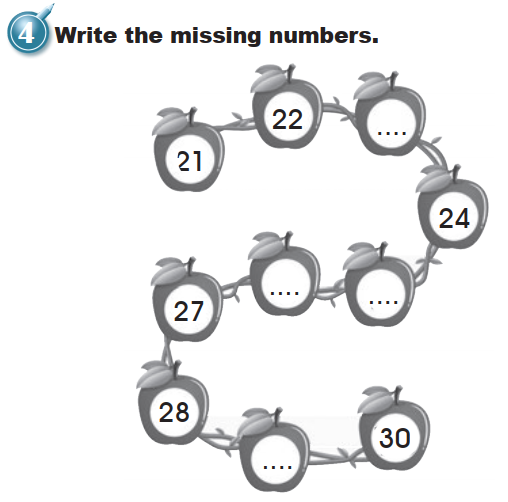
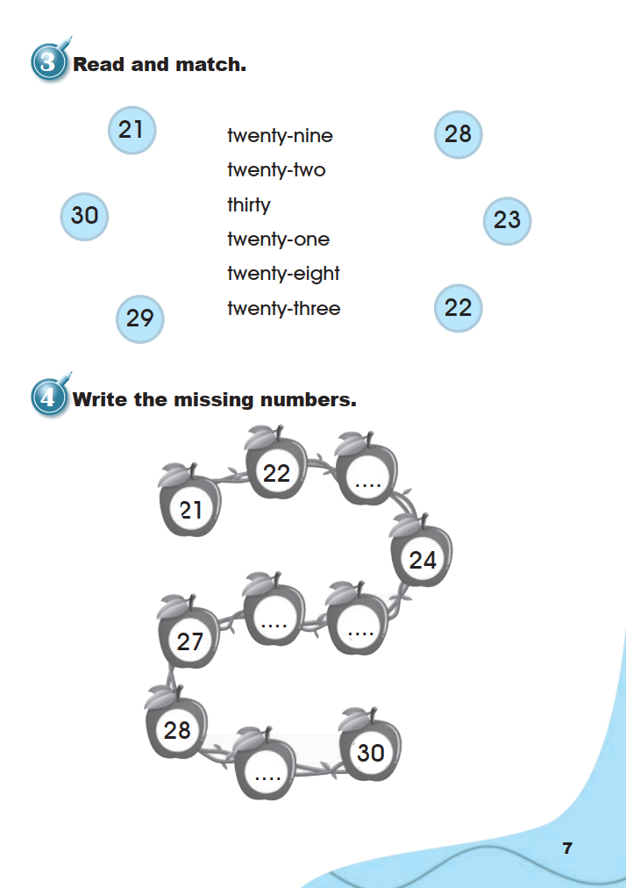
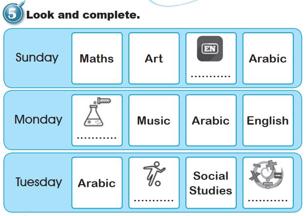
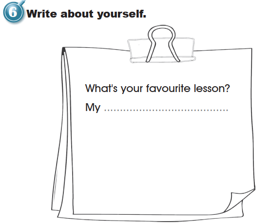
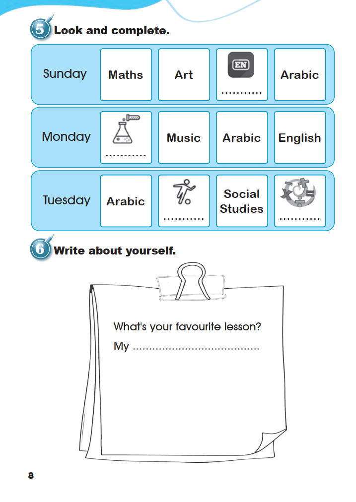

Workbook
Workbook · School Subjects · pages 6–8
All six exercises appear in their original order. You can write and select answers here; inferred answers are labelled, and personal writing is not automatically graded.
1. Listen and tick (✓).
No answer key is shown for this activity because the audio is unavailable.
2. Read and match.

Source image and display treatment · Workbook · p. 6
The original supplied scan, full listening-exercise crop, and item-2 crop are preserved unchanged in the repository but are not displayed here because the subject icon contains Arabic calligraphy. The listening item above uses a clearly labelled English-normalised display derivative: the calligraphy is replaced with the Latin abbreviation “AR”. The activity layout, empty response circles, English choices, and listening task are unchanged.
The audio recording is unavailable, so no answer is inferred. Preserved source: assets/grade3-unit1-lesson2/source/workbook-page-6.png; preserved full-exercise crop: assets/grade3-unit1-lesson2/crops/workbook-page-6-listen-and-tick.png; preserved item-2 crop: assets/grade3-unit1-lesson2/crops/workbook-page-6-listen-row-2.png; English-normalised display copy: assets/grade3-unit1-lesson2/crops/workbook-page-6-listen-row-2-english-display.png.
3. Read and match.

4. Write the missing numbers.

Printed numbers in order: 21 → 22 → … → 24 → … → … → 27 → 28 → … → 30.
Open the source page · Workbook · p. 7
This is the original supplied image, shown without redrawing or generation. Open it at full size for review.

5. Look and complete.

An interactive transcription of the same timetable; the images below are crops from the source. The lesson-number headings are added for organisation and are not printed in the book.
6. Write about yourself.

What’s your favourite lesson?
This is a personal response, so pupils’ answers will differ. The source provides no single answer, and the response is not automatically graded. Writing here is for practice only; it is not sent to a teacher or saved after you leave the page.
Open the source page · Workbook · p. 8
This is the original supplied image, shown without redrawing or generation. Open it at full size for review.
